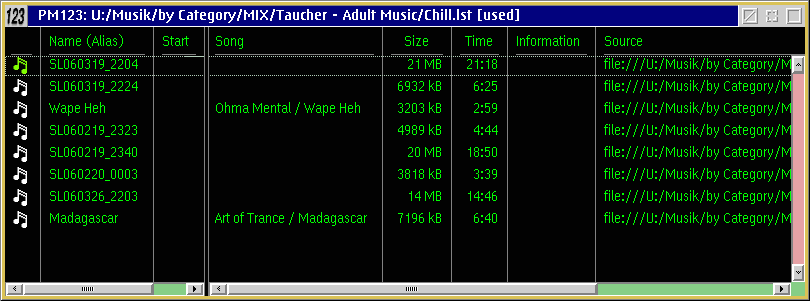

Migrating to PM123 1.40
There are some major changes in the GUI that you should be aware of when moving
from an earlier version. For further information see the changelog.
Playlist windows

Playlists, the playlist manager and bookmarks are now basically the same.
Furthermore you can open multiple playlists. That means:
- The playlist window is now
nothing more than a detailed view of a playlist.
- A default playlist is used if you drop more than one object
on the player.
- The playlist manager is a tree
view of
another default playlist, which usually contains other playlists, of course.
- The bookmark editor is now a detailed view of a special
playlist that is visualized in the player's context menu too.
- You can use drag and drop and direct manipulation to modify all of the
above.
- Different views of the same content are immediately synchronized as long
they are part of the same PM123 instance.
Nested playlists
Playlists may contain other playlists and they may contain further playlists
too. That has the following effects:
- While playing all items of a child playlist are played when the playback
reaches the sublist and before PM123 continues in the parent list.
- In shuffle mode items in different sublists are not interchanged.
- The PM123 main window flattens the nested lists and shows allways the index
and the time offsets in the virtually flattened list. To see what's going
on open a tree view of the currently played list.
- Nested playlists in the bookmark list cause submenus.
- When the playlists are nested recursively the play iterator will skip sublists
that are already in the call stack. This avoids an infinite recursion.
Filesystem folders
PM123 is able to play the content of filesystem folders directly without the
need to load all files into a playlist. This works as follows:
- The content of a folder is handled as a virtual playlist.
- Optionally subfolders are virtualized as nested playlists too.
- Unplayable files are skipped during playback.
- Changes in the filesystem are reflected to PM123 when PM123 is restarted
or a folder is manually refreshed.
- If a folder is selected in the open dialog the content is no longer copied
into a real playlist.
- You cannot modify virtual playlists.